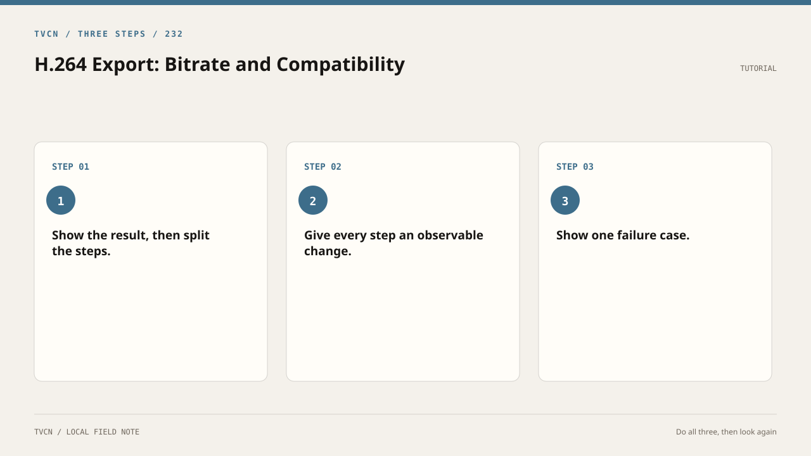

On set
Use 10 to 16 Mbps for 1080p and 35 to 45 Mbps for 4K. Two-pass encode, AAC audio at 192 kbps.
Do this
H.264 export fixes platform and bitrate first, then two-pass encoding; low bitrate destroys motion first.
- 1080p at 10 to 16 Mbps, 4K at 35 to 45 Mbps.
- Use two-pass encoding.
- Audio AAC at 192 kbps.
Avoid
Do not upload 4K at 5 Mbps; any motion turns into blocks.
Three-step flow

Three causes
For “H.264 Export: Bitrate and Compatibility”, check three directions first. Change one variable, record a 30-second comparison, and see which link the change follows.
| Cause | Signal on set | Five-minute test |
|---|---|---|
| Bitrate too low | Motion and large detail block up, and platform recompression makes it worse | Test 12/20/35Mbps on a two-second high-motion clip |
| Incompatible parameters | Colour, frame rate, pixel aspect and platform spec disagree | Check MediaInfo against the delivery spec |
| Audio out of spec | Wrong sample rate, channels or bitrate causes silence or distortion | Inspect the audio track separately |
On-set diagnosis
- Use MediaInfo to read codec, profile, level, bitrate, colour tags and audio parameters.
- Upload a thirty-second test to the target platform and check clarity and colour.
- Compare the same frame in source and export for unintended crop or stretch.
Fix
H.264 is not about the smallest file; it is about correct playback on the target platform. Set the delivery spec first, then choose bitrate and profile.
- For web delivery use H.264 High Profile, 4:2:0 8-bit, AAC 48kHz.
- Use 12–20Mbps for 1080p and 35–60Mbps for 4K; go higher for heavy motion.
- Use two-pass or VBV limits so peaks do not blow the budget.
- After export, check first frame, last frame, audio sync and platform playback.
Failure cases
With “H.264 Export: Bitrate and Compatibility”, these three moves make it worse. Pick one replacement action and do not change three variables at once.
| Failure | Why it gets worse | Replace with |
|---|---|---|
| Watch file size only | The file is small and the detail and audio are broken | Test against platform spec |
| Deliver 4:4:4 | The platform does not support it and recompresses or rejects | Deliver 4:2:0 |
| Ignore colour tags | Colour looks grey or oversaturated on the platform | Write correct matrix/primaries |
Acceptance table
Acceptance is not “it feels better”; all four must be identifiable, playable and logged.
| Check | Pass line | Log |
|---|---|---|
| Codec | H.264 High with a matching level | MediaInfo |
| Bitrate | No blocking in high motion | Thirty-second upload |
| Audio | AAC 48kHz, correct channels, no clipping | Listen separately |
| Colour | Platform playback matches the source | Compare with source |
Image note. Covers, diagrams and step images on this page are editorial illustrations or structure diagrams, not photographs of a test performed here; they are not evidence of measured gear performance. Where an image is AI-assisted, the caption says so. Read the test conditions in the text before treating an image as proof.